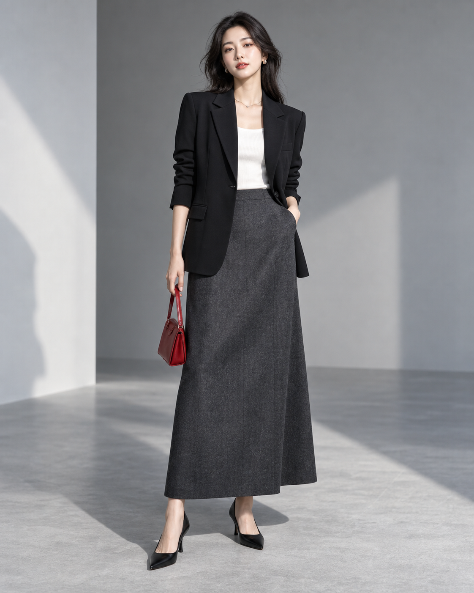

不是从零生成，
先把它 演绎对。
给我一件衣服和一张脸。我会先理解它适合的情绪、动作、场景与能量，再把这个方向变成一条新的短视频。
1选择方式
2放入素材
3挑参考
4定生成
你想从哪里开始？
两种方式，最后都会进入同一个生成工作台。
先把主角放进来
衣服决定演绎，模特决定气质；场景可以沿用，也可以重新选择。
2 个必需素材
YOUR MATERIALS
一件衣服，一张脸
支持 JPG、PNG、MP4；手机可直接拍照或从相册选择。
还差 2 个素材
这是它最适合的 10 个方向
每个方向都来自金标准案例的可复用结构，选一个你想继续的感觉。
10 个候选方向
请选择一个方向
最后，决定怎么生成
不做低清预览，直接选择你要交付的清晰度、时长和模型。
生成模型
模型会影响动作还原、画面质感与生成速度。
输出规格
你想保留什么？
原参考的动作节奏
原参考的场景关系
原参考的画质与色调
Seedance 2.5 · 720p · 8 秒
预计生成 1 条成片
预计生成 1 条成片
正在把方向变成成片
先整理参考里的关键节奏。

把衣服演绎对
正在生成 720p · 8 秒成片